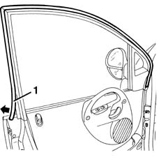

7005A42 front side door seal, lh or rh - r+r
- Path
- Procedures > 70 FITTINGS > 7005 PASSENGER COMPARTMENT FRONT SIDE DOORS > 7005A front side door assembly > 7005A42 front side door seal, lh or rh - r+r
- Kind
- repair procedure (removal / refitting; the operation number is the code)
- Applies to
- all engines; all production periods
- Interactive page
- https://sloeber94.github.io/elrnDB-fMltpl/en/#/2892014
Applies to: all engines; all production periods
 Removing
Removing
 Refitting
Refitting1. Remove the seal along the whole perimeter.

Applies to: all engines; all production periods
Refitting
RemovingCheck that the seal is undamaged.
Fit the seal along the whole perimeter.